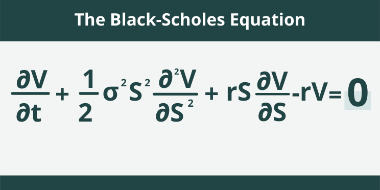
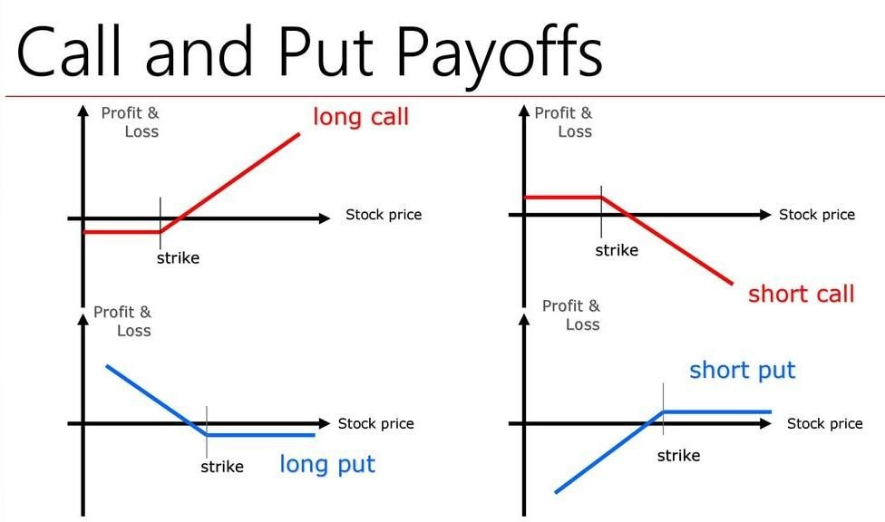
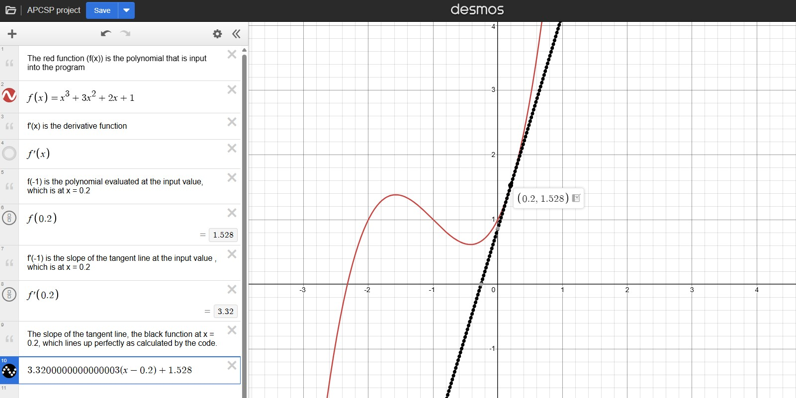

This project is a functional implementation of the Black-Scholes model, a widely used formula for pricing European call and put options. Users input stock price, strike price, volatility, time to maturity, and the risk-free interest rate to compute theoretical option prices.
I built this project due to my interest in finance and quantitative modeling. It allowed me to apply calculus and probability concepts while strengthening my skills in HTML, CSS, JavaScript, and Python (via Pyodide).


For my Chemistry Honors final exam, I created an educational video explaining the gas laws using AI-generated presidential deepfakes, synthetic voices, and custom animations.
Inspired by 3Blue1Brown, I used Python's Manim library to design all animations independently.
These lab reports were written as part of Chemistry Honors coursework.
This project combined basic calculus and coding.
